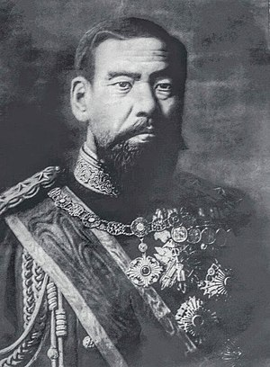

Historie Japonska je rozdělena do několika období.
Nejstarší bylo Džómon 10tis.-300 let př. n. l.
Japonsko bylo obýváno již v období mladého paleolitu. V ledových dobách mohli lidi, zvířata i rostliny
migrovat do Japonska a naopak. Japonsko bylo spojováno s asijským kontinentem.
Další období začíná při
masivnější migraci lidí a použití nových technik, nazývané jako Jajoi, které trvalo od
300l.př.n.l.-710n.l.
Následovalo období Nara a to je období vzniku Japonska, které bylo založeno císařem Džimmu podle japonské
mytologie. Dále zde bylo několik císařů v různých obdobích.
Moderní doba začala vládnutím císaře Meidži, který
začal komunikovat se západní civilizací a s tím začal modernizaci a industrilizaci, tzv reformy Meidži. Od
té
doby má každý císař své období.
Uskutečnily se různé války s Čínou a Koreí, proto byla například Korea
okupována Japonskem a další území Číny a některé ostrovy Indonésie. Pořádalo masakry před 2. světovou
válkou v
Číně. Nejznámější je masakr v Nankingu. Následně rozpoutalo 2. světovou válku v Asii, kterou prohrálo a
bylo
do roku 1952 v okupaci USA, ale stále jejich armáda je přítomna v Japonsku.